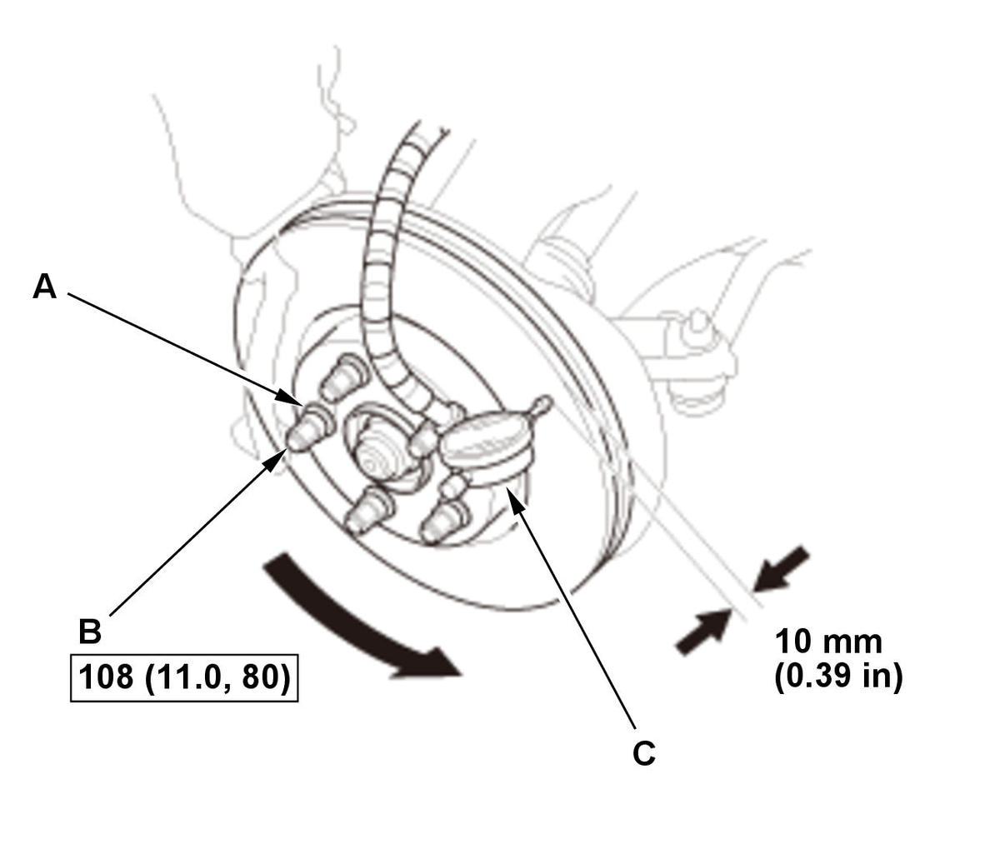

Front Brake Disc Inspection (Except Type-R): Inspection
NOTE: How to read the torque specifications .
- Vehicle - Lift
- Front Wheels - Remove
- Brake Pad - Remove
- Brake Disc Thickness and Parallelism - Inspect
1. Using a micrometer (A), measure the brake disc thickness at eight points, about 45° apart and 10 mm (0.39 in) in from the outer edge of the brake disc. Replace the brake disc if the smallest measurement is less than the maximum refinishing limit. *: This is the maximum allowable difference between the thickness measurements.
2. If the brake disc is beyond the service limit for parallelism, refinish the brake disc with a Honda-approved commercially available on-car brake lathe.
NOTE:
- If the brake disc is beyond the service limit for refinishing, replace it .
- For more information on Honda-approved brake lathes, refer to any authorized service information related brake disc refinishing (if available).
3. Inspect the brake disc runout.
Brake disc thickness: Except Si: Standard: 23.0 mm (0.906 in) Maximum refinishing limit: 21.0 mm (0.827 in) Si: Standard: 25.0 mm (0.984 in) Maximum refinishing limit: 23.0 mm (0.906 in) Brake disc parallelism*: 0.015 mm (0.00059 in) max. - Brake Disc Runout - Inspect

Courtesy of HONDA, U.S.A., INC.1. Inspect the brake disc to wheel surface for damage and cracks. 2. Clean the brake disc thoroughly, and remove all rust.
3. Install suitable flat washers (A) and the wheel nuts (B).
4. Tighten the wheel nuts to the specified torque to hold the brake disc securely against the hub.
5. Set up the dial gauge (C) against the brake disc as shown.
6. Measure the runout at 10 mm (0.39 in) from the outer edge of the brake disc.
7. If the brake disc is beyond the service limit, refinish the brake disc with a Honda-approved commercially available on-car brake lathe.
NOTE:
- If the brake disc is beyond the service limit for refinishing, replace it .
- If the brake disc is replaced with a new one, check the new disc for runout. If the new disc is out of specification, refinish the disc.
- For more information on Honda-approved brake lathes, refer to any authorized service information related brake disc refinishing (if available).
Maximum refinishing limit: Except Si: 21.0 mm (0.827 in) Si: 23.0 mm (0.906 in) Brake disc runout: Service limit: 0.04 mm (0.0016 in) - Brake Pad - Install
- Front Wheels - Install